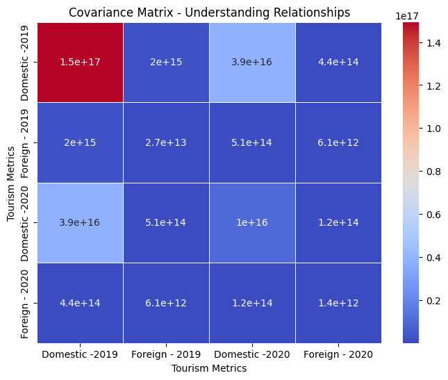

- **Covariance:** Measures how two tourism metrics change together. Positive means they tend to increase or decrease
together, negative means an inverse relationship.
- **Correlation:** Standardized measure of the strength and direction of the linear relationship between two
metrics. Ranges from -1 to 1. Positive indicates a positive relationship, negative indicates a negative
relationship, and 0 means no linear relationship.
**Point:**
- **Identify Patterns:** Understand how metrics move in relation to each other.
- **Decision Making:** Make informed decisions based on relationships.
- **Risk Assessment:** Assess potential risks or opportunities in the tourism industry.
India Tourism Statistics statewise 2019-2020 domestic and foreign
covariance Matrix Heatmap

corelation Matrix Heatmap